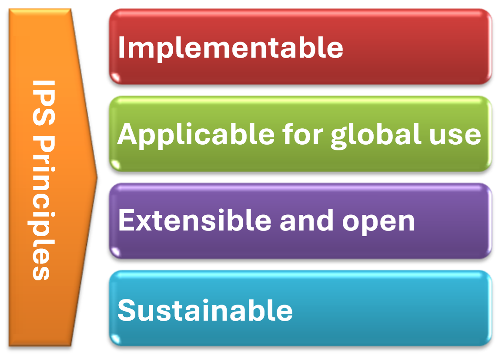

International Patient Summary Implementation Guide
2.0.0-ballot - STU 2 Ballot

International Patient Summary Implementation Guide
2.0.0-ballot - STU 2 Ballot

International Patient Summary Implementation Guide, published by HL7 International / Patient Care. This guide is not an authorized publication; it is the continuous build for version 2.0.0-ballot built by the FHIR (HL7® FHIR® Standard) CI Build. This version is based on the current content of https://github.com/ritikarawlani/fhir-ips and changes regularly. See the Directory of published versions
| Page standards status: Informative |
With the formal agreement signed on April 2017, HL7 International and CEN/TC 251 expressed their intent to collaborate under a set of principles for the International Patient Summary (IPS).
Figure 1: The IPS principles

Based on this agreement, the standards specification for the IPS has to be (a) implementable (b) applicable for global use (c) extensible and open to future use cases and solutions. The standards specification and their implementation must be moreover sustainable.
The IPS is specified in this guide as a HL7 FHIR document (a Bundle including an IPS Composition), composed by a set of potentially reusable "minimal" data blocks (the IPS profiles). A HL7 CDA R2 representation is specified as well in a distinct Implementation Guide. The expressiveness of SNOMED CT and other primary terminologies from this guide enable the specification to represent information independent of the underlying syntax (CDA R2 or FHIR).
To be universally exchangeable and understood, a patient summary must rely as much as possible on structured data and multilingual international reference terminologies that are licensed at no cost for global use in the International Patient Summary. In the case of SNOMED CT, SNOMED International has created the IPS Terminology, which is an open and free sub-ontology of SNOMED CT that references a core set of clinical concepts licensed at no-cost with the aim to serve the public good. This sub-ontology is maintained in collaboration with HL7 International and other standards development organizations and updated annually. In this spirit, this version of the International Patient Summary defines SNOMED CT as a primary terminology and it is used in many of the value sets.
The IPS value sets that use SNOMED CT content are defined using FHIR inclusion and exclusion criteria. While not used computably in this implementation guide, equivalent Expression Constraint Language (ECL) queries are also shown within value set definitions for users to implement.
These value set definitions can be expanded against any available SNOMED CT content. For those in non-SNOMED International Member countries or those without a SNOMED CT Affiliate License, the value set definitions should be expanded against the IPS Terminology, which includes a collection of SNOMED CT concepts that are freely accessible. For those in Member countries or with a SNOMED CT Affiliate license, the value set definitions should be expanded against the International Edition of SNOMED CT or a National Extension (or Edition), depending on the local requirements.
To support interoperability of IPS content between organizations that used different SNOMED CT value set content, it is proposed to use a "common proximal ancestor" strategy, substituting any local concept with an ancestor that is shared between the exchanging parties, e.g., a concept in the IPS Terminology. This substitution can be performed using an ECL query, and detailed instructions will be available on the SNOMED ECL documentation.
Other primary terminologies used in this specification are LOINC for observations (e.g., laboratory tests) and document sections, UCUM for units of measure, EDQM Standard Terms for dose forms and routes and ISO 3166 for countries [this ISO code system can be used for free in «lists» (e.g. value sets) or software]. Looking at the availability of other globally usable reference terminologies, in selected cases FHIR-defined terminologies are recommended.
As described also in the IPS CDA implementation guide it is not in the scope of this version of this Implementation Guide to constrain solutions or strategies for the creation, sharing, syntactical and semantic mapping, translation, and use of the IPS. Recommendations on operations for IPS generation are included in this guide, although future implementation guides may provide alternative methods and further recommendations different than those outlined. In addition, Integrating the Healthcare Enterprise (IHE) has also publsihed guidance on the Sharing of IPS which may be a helpful reference.
IG © 2020+ HL7 International / Patient Care. Package hl7.fhir.uv.ips#2.0.0-ballot based on FHIR 4.0.1. Generated 2024-08-14
Links: Table of Contents |
QA Report
| Version History |
 |
Propose a change
|
Propose a change